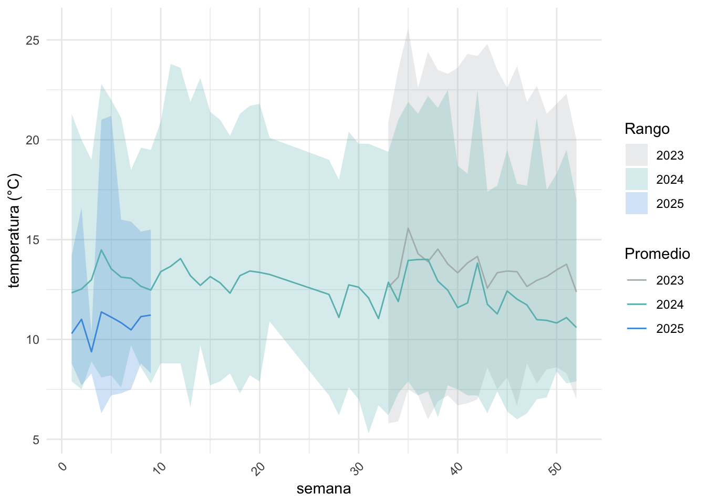
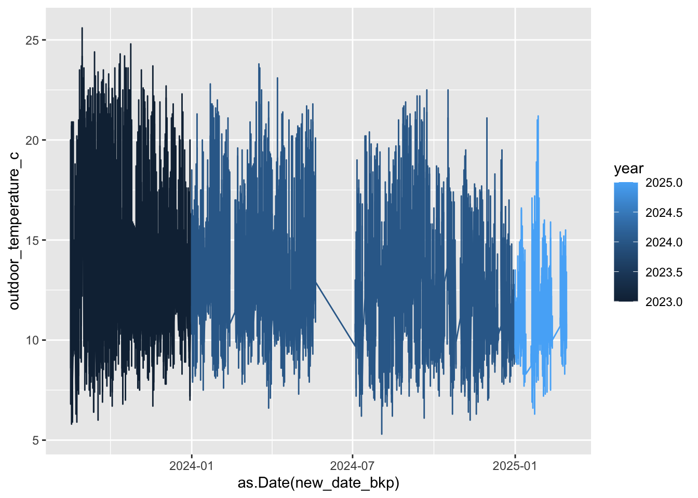

library(tidyr)
library(dplyr)
library(ggplot2)
library(clock)
library(readr)
library(lubridate)Código - Procesamiento Climático Angamarca
Código de interpretación de datos de la estación meteorológica.
Esta libreta contiene información de cómo procesar los datos tomados desde la estación meteorológica de la Alianza Jambato, ubicada en Angamarca, cerca del área núcleo donde se encuentra la última población conocida del jambato. Esta libreta ha sido creada gracias al trabajo de Michelle Rodríguez, Raúl Ontadena & Andrés Mármol, durante el periodo de voluntariados de la Alianza Jambato comprendidos entre Julio y Octubre de 2024.
Para más información, contactarse con María del Carmen Vizcaino Barba (MCVB).(mcvizcaino@alianzajambato.org).
1. Descargando los datos.
La estación meteorológica de la Alianza Jambato envía los datos diarios a la nube através del internet. Los datos pueden ser visualizados en www.ambientweather.net, e iniciar sesión con las credenciales de la alianza (adquirirlas con MCVB).
NOTA: La descarga de datos debe realizarse mensualmente, ya que pasado el año, los datos obtenidos se borran automaticamente.
NOTA: Es importante revisar el estado de las baterías AA y AAA que operan en la estación científica periódicamente. Se puede encontrar información respecto a esto en el Dashboard de inicio al iniciar sesión en Ambient Weather.
Una vez ingresado, uno se dirige hacia la pestaña “Graphs & Tables” y posteriormente se hace click sobre las fechas para seleccionar el rango de días a descargarse (fig 1.1).

Una vez especificada la fecha, la imagen cambia a las variaciones dentro del rango seleccionado. Para descargar los datos primero se solicita que se resuman los datos (fig 1.2) y posteriomente se procede a seleccionar “Export all data” (figura 1.3).

Los archivos resultantes son guardados en el repositorio de la Alianza Jambato que actualmente se encuentra en la cuenta de Google Drive (el repositorio será migrado a OneDrive).
2. Procesando los datos.
Antes de empezar se debe llamar a todos los paquetes de R que se utilizarán dentro de este ejercicio. Los paquetes son readr, tidyr, dplyr, clock, ggplot2 & lubridate.
El procesamiento de datos hasta esta fase incluye el poder llamar, harmonizar (e.g. asignar formatos), e integrar las tablas mensuales en un archivo unido. Para esto se deben abrir todos los archivos dentro del repositorio para posteriormente integrarlos.
El primer paso es llamar a los datos una vez estos sean descargados localmente. Esta parte del código dependerá de dónde se descarguen los datos en el computador de cada uno. El uso de “\” o “/” dependerá tambien del sistema operativo en uso.
# estableciendo la dirección de CSVs en mi computador local
folder_path <- "/Users/andresmarmolguijarro/Downloads/meteor"
# enlistando todos los CSVs dentro de este archivo
csv_list <- list.files(path = folder_path, pattern = "\\.csv$", full.names = TRUE)Finalmente se llaman a todos los csvs mensuales
csvs<- lapply(csv_list, read_csv)Nota: Un paso adicional que ayuda a general un solo archivo consolidado es el siguiente:
# crea una función para llamar a todos los CSVs
csvsall <- lapply(csv_list, function(file){
read_csv(file) |> mutate(source_file = basename(file))
})
# agregan todos los archivos en un solo data frame llamado dfall
dfall <- bind_rows(csvsall)Al final obtenemos un solo dataset que consta de 125901 filas x 27 columnas. Este dataset va desde septiembre de 2023 hasta febrero de 2024. El numero de filas variaría si se añaden datos anteriores y/o posteriores a la fechas especificadas.
str(dfall)tibble [125,901 × 27] (S3: tbl_df/tbl/data.frame)
$ Date : POSIXct[1:125901], format: "2023-09-01 04:55:00" "2023-09-01 04:50:00" ...
$ Simple Date : POSIXct[1:125901], format: "2023-08-31 23:55:00" "2023-08-31 23:50:00" ...
$ Outdoor Temperature (°C) : num [1:125901] 15.3 15.5 15.3 15.2 15.1 15.4 15.5 15.5 15.4 15.5 ...
$ Feels Like (°C) : num [1:125901] 15.3 15.5 15.3 15.2 15.1 15.4 15.5 15.5 15.4 15.5 ...
$ Dew Point (°C) : num [1:125901] 4.9 4.8 4.9 5.1 5 5.3 5.4 5.4 5.3 5.4 ...
$ Wind Speed (km/hr) : num [1:125901] 9.7 7.2 4 7.2 6.1 6.1 9.4 10.8 6.1 13.3 ...
$ Wind Gust (km/hr) : num [1:125901] 14.8 13 9.4 9.4 9.4 9.4 11.2 18.4 9.4 23.8 ...
$ Max Daily Gust (km/hr) : num [1:125901] 46.1 46.1 46.1 46.1 46.1 46.1 46.1 46.1 46.1 46.1 ...
$ Wind Direction (°) : num [1:125901] 104 121 78 236 62 184 82 115 185 102 ...
$ Hourly Rain (mm/hr) : num [1:125901] 0 0 0 0 0 0 0 0 0 0 ...
$ Daily Rain (mm) : num [1:125901] 0 0 0 0 0 0 0 0 0 0 ...
$ Weekly Rain (mm) : num [1:125901] 3.5 3.5 3.5 3.5 3.5 3.5 3.5 3.5 3.5 3.5 ...
$ Monthly Rain (mm) : num [1:125901] 18.3 18.3 18.3 18.3 18.3 18.3 18.3 18.3 18.3 18.3 ...
$ Total Rain (mm) : num [1:125901] 22.6 22.6 22.6 22.6 22.6 22.6 22.6 22.6 22.6 22.6 ...
$ Relative Pressure (hPa) : num [1:125901] 1013 1013 1013 1013 1013 ...
$ Humidity (%) : num [1:125901] 50 49 50 51 51 51 51 51 51 51 ...
$ Ultra-Violet Radiation Index: num [1:125901] 0 0 0 0 0 0 0 0 0 0 ...
$ Solar Radiation (W/m^2) : num [1:125901] 0 0 0 0 0 0 0 0 0 0 ...
$ Indoor Temperature (°C) : num [1:125901] 18 18 18.1 18.1 18.2 18.2 18.3 18.3 18.3 18.4 ...
$ Indoor Humidity (%) : num [1:125901] 42 43 43 43 43 43 43 43 43 43 ...
$ Outdoor Battery : num [1:125901] 1 1 1 1 1 1 1 1 1 1 ...
$ Absolute Pressure (hPa) : num [1:125901] 735 735 734 734 734 ...
$ CO2 battery : num [1:125901] 1 1 1 1 1 1 1 1 1 1 ...
$ Indoor Feels Like (°C) : num [1:125901] 18 18 18.1 18.1 18.2 18.2 18.3 18.3 18.3 18.4 ...
$ Indoor Dew Point (°C) : num [1:125901] 4.9 5.2 5.3 5.3 5.4 5.4 5.5 5.5 5.5 5.6 ...
$ source_file : chr [1:125901] "2023_08_Agosto.csv" "2023_08_Agosto.csv" "2023_08_Agosto.csv" "2023_08_Agosto.csv" ...
$ Rain Rate (mm/hr) : num [1:125901] NA NA NA NA NA NA NA NA NA NA ...2.1. Reorganizando las columnas internas del dataset.
El dataset original cuenta con las columnas Date y Simple Date. El primer paso a tomar en este sentido es reconfigurar la tabla de tal manera que podamos formatear las fechas de manera homogenea y legible para R
# aseguramos de que el data frame sea un tibble para la ejecución de las transformaciones en dplyr y limpiamos los nombres de las columnas (algunos poseen sintaxis incorrecta al mostrar espacios entre palabras)
dfall <- as_tibble(dfall)
dfall <- janitor::clean_names(dfall)Ahora se formatean los datos contenidos en la columna Simple.Date usando la función as.POSIXct() del paquete lubridate
# nos permite ver cual es el nombre de la variable
names(dfall) [1] "date" "simple_date"
[3] "outdoor_temperature_c" "feels_like_c"
[5] "dew_point_c" "wind_speed_km_hr"
[7] "wind_gust_km_hr" "max_daily_gust_km_hr"
[9] "wind_direction" "hourly_rain_mm_hr"
[11] "daily_rain_mm" "weekly_rain_mm"
[13] "monthly_rain_mm" "total_rain_mm"
[15] "relative_pressure_h_pa" "humidity_percent"
[17] "ultra_violet_radiation_index" "solar_radiation_w_m_2"
[19] "indoor_temperature_c" "indoor_humidity_percent"
[21] "outdoor_battery" "absolute_pressure_h_pa"
[23] "co2_battery" "indoor_feels_like_c"
[25] "indoor_dew_point_c" "source_file"
[27] "rain_rate_mm_hr" # la variable de interes es "simple_date" y se crea una nueva columna llamada "NewDate"
dfall$new_date <- as.POSIXct(dfall$simple_date)
dfall$new_date <- format(dfall$new_date, "%Y-%m-%d %H:%M:%S")
dfall$new_date_bkp = dfall$new_dateAhora se separa NewDate en dos columnas: una para fecha y una para hora.
dfall <- separate(dfall, new_date, sep=" ",
into = c("date", "time"))3. Analizando y realizando figuras
En el primer caso vamos a analizar la temperatura por semana. Para esto vamos a crear una nueva tabla a partir de dfall
Primero, a partir de la columna date_2, extraemos valores importantes que serán codificados en forma de columna. Por ejemplo, el año y el número de semana iran en su columna independiente.
dfall$week <-isoweek(dfall$date) # extrae las semanas
dfall$year <- year(dfall$date)Ahora vamos a generar el primer gráfico de temperatura por año, por semana. Para esto usaremos la función group_by() & summarise() del paquete de dplyr
# na.rm = TRUE removes NAs, whereas na.rm = FALSE do not remove NAs
t <- dfall %>%
group_by(year, week) %>%
summarise(
mean_temp = mean(outdoor_temperature_c, na.rm = TRUE),
min_temp = min(outdoor_temperature_c, na.rm = TRUE),
max_temp = max(outdoor_temperature_c, na.rm = TRUE),
.groups = 'drop'
)Para el gráfico se usa ggplot2
temp_anual <- ggplot(data = t, aes(x=week, y=mean_temp, group=year))+
geom_ribbon(aes(ymin = min_temp,
ymax = max_temp,
fill = as.factor(year)),
alpha = 0.25) +
geom_line(aes(colour=as.factor(year))) +
labs(x = "semana",
y = "temperatura (°C)",
fill = "Rango",
colour = "Promedio")+
scale_fill_manual(values = c("2023" = "#b1babc",
"2024" = "#68bcbc",
"2025" = "#499AE0"))+
scale_colour_manual(values = c("2023" = "#b1babc",
"2024" = "#68bcbc",
"2025" = "#499AE0"))+
theme_minimal()+
theme(axis.text.x = element_text (angle= 45,
hjust= 1))temp_anual
td <- ggplot(dfall, aes(x=as.Date(new_date_bkp), y=outdoor_temperature_c, group = year))+
geom_line(aes(colour=year))td
4. Ubicación de la estación meteorológica en Angamarca.
library(leaflet)
leaflet() %>%
addTiles() %>%
addMarkers(lng = -78.906386, lat = -1.127606, popup = "1.13°S, 78.91°W") %>%
setView(lng = -78.906386, lat = -1.127606, zoom = 8)